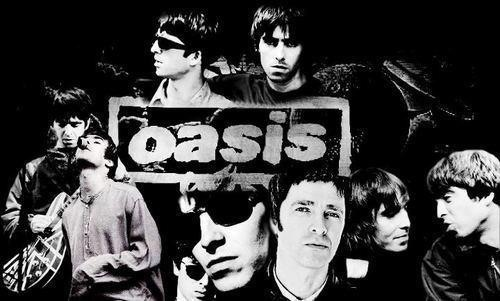
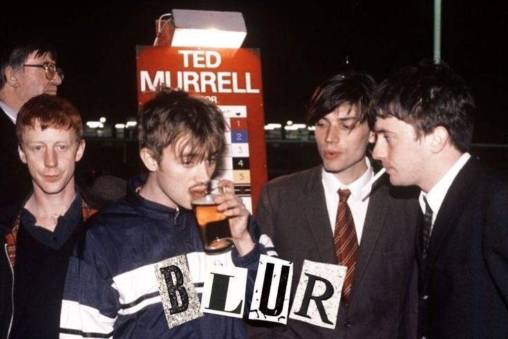
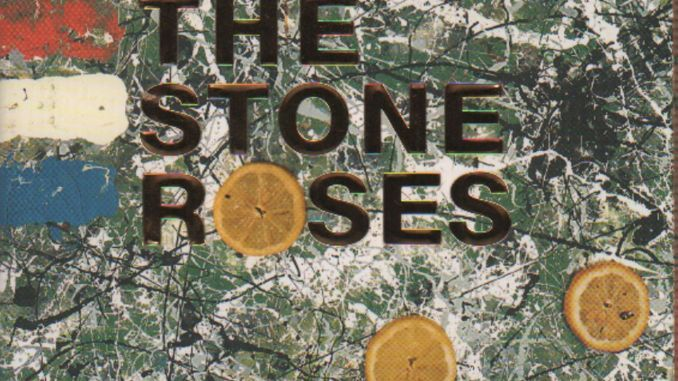

Oasis
Gallagher bersaudara dan lagu-lagu anthemic yang mendefinisikan era 90-an.
Menelusuri jejak kejayaan musik Britania Raya tahun 90-an.
Eksplorasi Sekarang
Gallagher bersaudara dan lagu-lagu anthemic yang mendefinisikan era 90-an.

Inovasi musik pop dengan sentuhan seni yang cerdas dan eksperimental.

Pionir gerakan Manchester yang menyatukan rock indie dengan ritme dance.
Britpop adalah gerakan budaya di Inggris yang mencapai puncaknya pada pertengahan 1990-an. Menekankan identitas lokal dan melodi gitar yang kuat, gerakan ini dipicu oleh persaingan legendaris antara Oasis dan Blur yang dikenal sebagai "The Battle of Britpop".